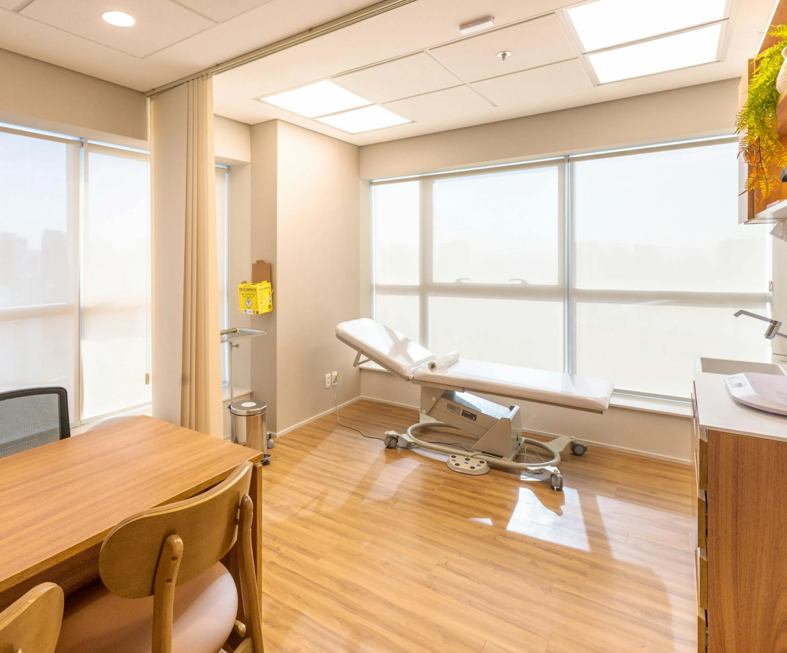
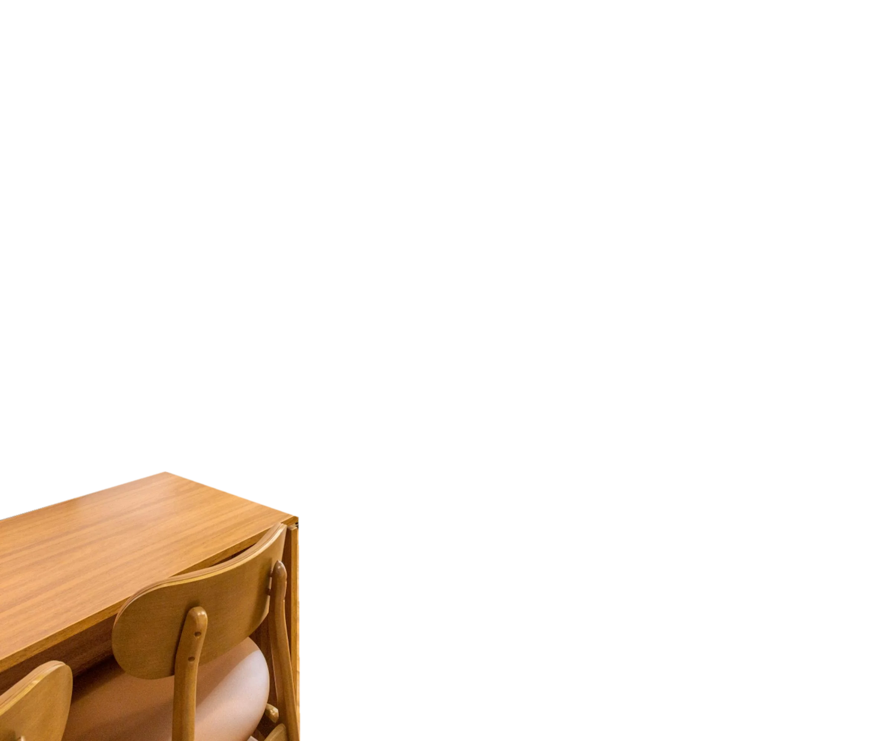

Dr. Marcello Ruiz · Gastroenterologia pediátrica · Santos e São Paulo
A barriga dele não melhora. Vamos entender por quê.
Refluxo, intestino preso, alergia ao leite, dor que vai e volta. Consulta para crianças e adolescentes, com tempo para ouvir a família.
